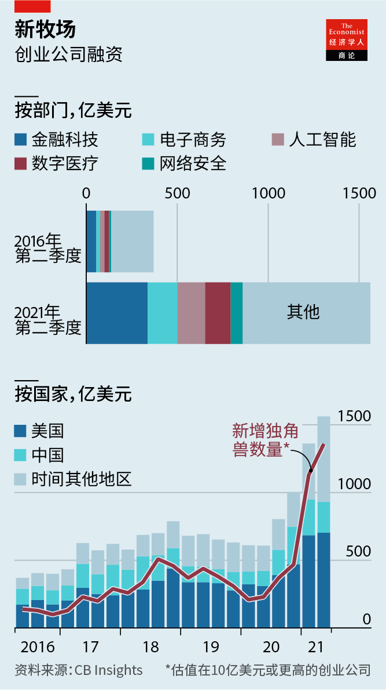
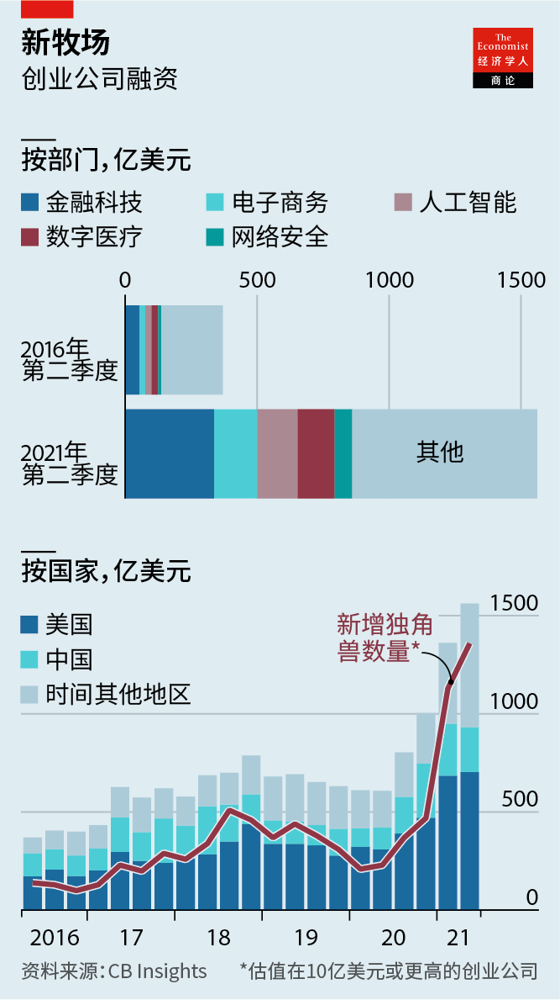

2021-08-08T15:08:36+00:00
Unicornucopia
独角兽图鉴
獨角獸圖鑑
Technology unicorns are growing at a record clip
科技独角兽正以创纪录的速度增长
科技獨角獸正以創紀錄的速度增長
The venture-capital boom is a risk for investors—and a gift for everyone else
这轮风险资本繁荣对投资者有风险——对其他所有人都是馈赠
這輪風險資本繁榮對投資者有風險——對其他所有人都是饋贈
AILEEN LEE, a venture capitalist who founded an investment firm called Cowboy Ventures, coined the term “unicorn” in 2013 to refer to what was then a rare, mythical species: privately held startups valued at $1bn or more. Any magical attributes aside, today they are commonplace—and becoming ever more so. Consumers, who stand to benefit from an array of novel, often cheap products and services, can expect to enjoy the ride. Investors betting on the unicorn derby should tread more carefully.
“牛仔风投”（Cowboy Ventures）的创始人、风险投资家艾琳·李（Aileen Lee）在2013年创造了“独角兽”一词，用以指代当时还很罕见的神秘物种：价值10亿美元或以上的私人控股创业公司。先不谈什么魔幻属性，如今它们已是稀松平常——而且还日益如此。这个旅程应该会让消费者乐在其中，因为他们会从一系列新颖的、通常还很便宜的产品和服务中受益。而押注独角兽大战的投资者们应该更谨慎探险。
“牛仔風投”（Cowboy Ventures）的創始人、風險投資家艾琳·李（Aileen Lee）在2013年創造了“獨角獸”一詞，用以指代當時還很罕見的神秘物種：價值10億美元或以上的私人控股創業公司。先不談什麼魔幻屬性，如今它們已是稀鬆平常——而且還日益如此。這個旅程應該會讓消費者樂在其中，因為他們會從一系列新穎的、通常還很便宜的產品和服務中受益。而押注獨角獸大戰的投資者們應該更謹慎探險。
The world’s unicorn herd is multiplying at a clip that is more rabbit-like. The number of such firms has grown from a dozen eight years ago to more than 750, worth a combined $2.4trn. In the first six months of 2021 technology startups raised nearly $300bn globally, almost as much as in the whole of 2020. That money helped add 136 new unicorns between April and June alone, a quarterly record, according to CB Insights, a data provider. Compared with the same period last year the number of funding rounds above $100m tripled, to 390. A lot of this helped fatten older members of the herd: all but four of the 34 that now boast valuations of $10bn or more have received new investments since the start of 2020.
世界上的独角兽种群正在快速繁衍，这一点倒更像兔子。这类公司的数量从八年前的十几家增加到如今的750多家，总估值达2.4万亿美元。今年前六个月，科技创业公司在全球筹集了近3000亿美元，几乎相当于2020年全年的规模。数据供应商CB Insights称，仅4月到6月间，这些钱就帮助新增了136家独角兽，创下了季度纪录。与去年同期相比，超过一亿美元的融资轮数增加了两倍，达到390轮。这其中的很大一部分还是喂肥了那些较年长的独角兽：自2020年初以来，34家如今估值已达或超过100亿美元的公司中，除了四家外全部都获得了新投资。
世界上的獨角獸種群正在快速繁衍，這一點倒更像兔子。這類公司的數量從八年前的十幾家增加到如今的750多家，總估值達2.4萬億美元。今年前六個月，科技創業公司在全球籌集了近3000億美元，幾乎相當於2020年全年的規模。數據供應商CB Insights稱，僅4月到6月間，這些錢就幫助新增了136家獨角獸，創下了季度紀錄。與去年同期相比，超過一億美元的融資輪數增加了兩倍，達到390輪。這其中的很大一部分還是喂肥了那些較年長的獨角獸：自2020年初以來，34家如今估值已達或超過100億美元的公司中，除了四家外全部都獲得了新投資。
The latest tech darlings are no longer primarily Uber-esque marketplaces for matching services with consumers. Instead, they offer, or are developing, sophisticated products, often in more niche markets. Some 25% of the funding in the second quarter went to financial-technology firms, with lots also flowing into artificial intelligence, digital health and cyber-security (see chart).
最新一批科技宠儿已不再主要是优步式的匹配服务与消费者的市场了。相反，它们提供或正在开发尖端产品，通常面向更小众的市场。第二季度约25%的融资流向了金融科技公司，还有大量资金流向了人工智能、数字医疗和网络安全领域（见图表）。
最新一批科技寵兒已不再主要是優步式的匹配服務與消費者的市場了。相反，它們提供或正在開發尖端產品，通常面向更小眾的市場。第二季度約25%的融資流向了金融科技公司，還有大量資金流向了人工智能、數字醫療和網絡安全領域（見圖表）。
 
The recipients of investors’ largesse are also getting more global. Although American and Chinese startups continue to top the fundraising league tables, the share from outside the two biggest markets grew from around 25% in 2016 to 40% in the past quarter. In July Flipkart, an Indian e-commerce firm, raised $3.6bn in a round that valued it at $38bn. Grab, vying to be South-East Asia’s answer to China’s super-apps, hopes to go public in New York this year at a valuation of $40bn.
从投资者的慷慨解囊中受益的公司也日益遍布全球。尽管中美两国的创业公司继续在融资排行榜上名列前茅，但这两个最大市场以外地区所占的份额从2016年的25%左右增长到了上一季度的40%。7月，印度电子商务公司Flipkart在一轮融资中筹集了36亿美元，估值380亿美元。Grab试图成为能与中国的超级应用匹敌的东南亚公司，它希望今年能以400亿美元的估值在纽约上市。
從投資者的慷慨解囊中受益的公司也日益遍布全球。儘管中美兩國的創業公司繼續在融資排行榜上名列前茅，但這兩個最大市場以外地區所佔的份額從2016年的25%左右增長到了上一季度的40%。7月，印度電子商務公司Flipkart在一輪融資中籌集了36億美元，估值380億美元。Grab試圖成為能與中國的超級應用匹敵的東南亞公司，它希望今年能以400億美元的估值在紐約上市。
The torrent of cash can be explained by two factors. The first is a divestment spree by the startups’ early venture-capital (VC) backers. These stakes command top dollar from investors desperate for exposure to the pandemic-era digitisation wave. Exits, via public listings and acquisitions, more than doubled globally year on year, to nearly 3,000. The proceeds are flowing back into new VC funds, which have so far this year raised $74bn in America alone, nearing the record $81bn in 2020 in half the time. The venture capitalists cannot spend the dough fast enough. In the three months to June Tiger Global, a particularly aggressive New York investment firm, made 1.3 deals on average every business day.
现金滚滚而来或许可以用两个因素来解释。首先是创业公司早期风投支持者的撤资热潮。迫切想投身疫情时代数字化浪潮的投资者闻风而至，为这些股份支付巨额资金。通过公开上市和收购的退出同比增长了一倍多，达到近3000起。相关收益正回流到新的风投基金，今年迄今为止仅美国的风投基金就筹集了740亿美元，用一半的时间就几乎追平了2020年创纪录的810亿美元。风险投资家的钱多得都花不过来。在截至6月的三个月里，风格特别激进的纽约投资公司老虎全球管理（Tiger Global）平均每个工作日达成1.3笔交易。
現金滾滾而來或許可以用兩個因素來解釋。首先是創業公司早期風投支持者的撤資熱潮。迫切想投身疫情時代數字化浪潮的投資者聞風而至，為這些股份支付巨額資金。通過公開上市和收購的退出同比增長了一倍多，達到近3000起。相關收益正迴流到新的風投基金，今年迄今為止僅美國的風投基金就籌集了740億美元，用一半的時間就幾乎追平了2020年創紀錄的810億美元。風險投資家的錢多得都花不過來。在截至6月的三個月里，風格特別激進的紐約投資公司老虎全球管理（Tiger Global）平均每個工作日達成1.3筆交易。
The second reason for soaring valuations is more competition among investors. Relative newcomers to tech-investing, such as pension funds, sovereign-wealth funds and family offices, are encroaching on the private markets that used to be dominated by VC firms from Sand Hill Road in Palo Alto. In the past quarter “non-traditional” investors in America took part in nearly 1,800 deals that together raised $57bn. Many may have been encouraged by the success of earlier forays by dabblers from outside the VC world. Their annual returns from exited investments in a first round of financing have averaged 30% in the past decade, reckons PitchBook, another data firm. That is more than double the 10-15% for veteran VCs.
估值飙升的第二个原因是投资者之间竞争加剧。过去，私人市场由帕罗奥图市（Palo Alto）沙山路的风投公司主导，而今养老基金、主权财富基金和家族办公室等相对较晚进入科技投资领域的新来者正在瓜分这一市场。过去一个季度，美国的“非传统”投资者参与了近1800笔交易，共筹集了570亿美元。很多人可能是受了风投界门外汉们早期试水的斩获鼓舞。另一家数据公司PitchBook估计，过去十年里，他们在第一轮融资中退出投资的年回报率平均为30%，是老牌风投公司（10%到15%）的两倍多。
估值飆升的第二個原因是投資者之間競爭加劇。過去，私人市場由帕羅奧圖市（Palo Alto）沙山路的風投公司主導，而今養老基金、主權財富基金和家族辦公室等相對較晚進入科技投資領域的新來者正在瓜分這一市場。過去一個季度，美國的“非傳統”投資者參與了近1800筆交易，共籌集了570億美元。很多人可能是受了風投界門外漢們早期試水的斬獲鼓舞。另一家數據公司PitchBook估計，過去十年里，他們在第一輪融資中退出投資的年回報率平均為30%，是老牌風投公司（10%到15%）的兩倍多。
This winning streak may yet end in tears. That is what happened two years ago, when richly valued firms with shaky business models either fizzled after their initial public offerings (like Uber and Lyft, two ride-hailing rivals) or never got that far (WeWork, an office-rental firm whose flotation was shelved after investors got cold feet). Many recently listed unicorns continue to bleed cash. According to The Economist’s calculations, those that went public in 2021 made a combined loss of $25bn in their latest financial year.
这种连胜势头可能还是会黯然收场，一如两年前的情形。当时，估值飙高但商业模式不稳定的公司要么在IPO后失败（比如互为竞争对手的网约车公司优步和Lyft），要么始终没能走到IPO这一步（如办公室租赁公司WeWork，其上市计划在投资者临阵退缩后搁置）。许多近期上市的独角兽仍在亏损。根据本刊计算，那些在2021年上市的公司最近一个财年总共亏损了250亿美元。
這種連勝勢頭可能還是會黯然收場，一如兩年前的情形。當時，估值飆高但商業模式不穩定的公司要麼在IPO後失敗（比如互為競爭對手的網約車公司優步和Lyft），要麼始終沒能走到IPO這一步（如辦公室租賃公司WeWork，其上市計劃在投資者臨陣退縮後擱置）。許多近期上市的獨角獸仍在虧損。根據本刊計算，那些在2021年上市的公司最近一個財年總共虧損了250億美元。
Assessing whether the remaining ones are worth their lofty valuations looks harder than ever. Like their predecessors, they do not disclose financial results. At the same time, extrapolating from the earlier unicorns, which tended to pursue growth at all costs in winner-takes-all markets, offers little help because today’s lot often aim to capture good margins by selling genuinely unique technology. This could be a more sustainable strategy—if the technology works. But it is harder for non-experts to evaluate, especially based on what is often little more than a prototype. Nikola and Lordstown, two electric-vehicle companies that listed in 2020 via reverse mergers with special-purpose acquisition companies (SPACs), are under investigation by American authorities over allegedly exaggerating the viability of their technology.
其余的独角兽是否配得上它们的高估值？要评估这一点似乎前所未有地困难。和自己的前辈们一样，它们也不对外披露财务结果。同时，从早期独角兽的经历中也推断不出什么，因为它们都倾向于在赢家通吃的市场中不惜一切代价追求增长，而如今的独角兽通常都是试图靠销售真正独特的技术来获取不俗的利润。这有可能是一个更可持续的策略——如果其技术可行的话。但专家以外的人群就更难做出评估了，特别是在基于通常比原型详尽不了多少的东西做判断时。两家电动汽车公司尼古拉（Nikola）和Lordstown于2020年通过与特殊目的收购公司（SPAC）反向合并上市，目前正因涉嫌夸大自身技术的可行性而受到美国当局调查。
其餘的獨角獸是否配得上它們的高估值？要評估這一點似乎前所未有地困難。和自己的前輩們一樣，它們也不對外披露財務結果。同時，從早期獨角獸的經歷中也推斷不出什麼，因為它們都傾向於在贏家通吃的市場中不惜一切代價追求增長，而如今的獨角獸通常都是試圖靠銷售真正獨特的技術來獲取不俗的利潤。這有可能是一個更可持續的策略——如果其技術可行的話。但專家以外的人群就更難做出評估了，特別是在基於通常比原型詳盡不了多少的東西做判斷時。兩家電動汽車公司尼古拉（Nikola）和Lordstown於2020年通過與特殊目的收購公司（SPAC）反向合并上市，目前正因涉嫌誇大自身技術的可行性而受到美國當局調查。
Another risk comes from politics. Authorities around the world are growing warier of letting tech firms get too big or entering regulated markets such as finance or health care. As part of a broader crackdown against big tech firms China’s government recently sabotaged the operations of Didi, by banning its app from Chinese app stores days after the firm’s $68bn initial public offering in New York, ostensibly over misuse of users’ data. Such moves have chilled investors’ appetite for Chinese startups, funding for which has actually declined in the past two quarters. In America the Securities and Exchange Commission is beginning to scrutinise the use of cryptocurrencies. Many crypto-exchanges set investors’ pulses racing in last year’s bitcoin rush. Now the market capitalisation of Coinbase, one of the biggest, has shrunk by half, or $56bn, since peaking after its listing in April.
另一个风险来自政治。世界各地的政府越来越不放心任由科技公司变得太大，或者进入金融或医疗等受监管的市场。中国政府对大型科技公司展开了广泛整顿，其中一项行动就是于近期阻挠了滴滴的运营。在该公司以680亿美元的市值在纽约IPO几天后，其应用被从中国的应用商店下架，表面声称的原因是它滥用用户数据。这类行动打击了投资者对中国创业公司的兴趣，后者在过去两个季度的融资实际上有所下降。在美国，证券交易委员会开始审查加密货币的使用。在去年的加密货币热潮中，许多加密货币交易所令投资者血脉贲张。其中全球最大的交易所之一Coinbase的市值在4月上市后达到峰值，如今已缩水了一半，跌去560亿美元。
另一個風險來自政治。世界各地的政府越來越不放心任由科技公司變得太大，或者進入金融或醫療等受監管的市場。中國政府對大型科技公司展開了廣泛整頓，其中一項行動就是於近期阻撓了滴滴的運營。在該公司以680億美元的市值在紐約IPO幾天後，其應用被從中國的應用商店下架，表面聲稱的原因是它濫用用戶數據。這類行動打擊了投資者對中國創業公司的興趣，後者在過去兩個季度的融資實際上有所下降。在美國，證券交易委員會開始審查加密貨幣的使用。在去年的加密貨幣熱潮中，許多加密貨幣交易所令投資者血脈賁張。其中全球最大的交易所之一Coinbase的市值在4月上市後達到峰值，如今已縮水了一半，跌去560億美元。
Investors, then, had better beware. For everyone else, the unicorn stampede is a boon. Because venture investments involve mostly equity and little debt, even flops such as WeWork or cautionary tales like Didi pose little risk to the financial system. So long as venture capital is bankrolling lossmaking startups while they offer subsidised services or develop clever new products, consumers have no reason to look the gift horned horse in the mouth. ■
因此，投资者最好要小心谨慎。而对其他所有人来说，这轮独角兽狂奔踩踏是个福音。因为风险投资主要涉及股票，几乎不涉及债务，所以即使是WeWork这样的失败案例或滴滴这样的警世故事也不会对金融体系造成什么风险。只要风险资本还在为亏损的创业公司提供资金，供它们提供受补贴的服务或开发巧妙的新产品，面对这些头顶犄角的神马们的馈赠，消费者只好恭敬不如从命，照单全收了。
因此，投資者最好要小心謹慎。而對其他所有人來說，這輪獨角獸狂奔踩踏是個福音。因為風險投資主要涉及股票，幾乎不涉及債務，所以即使是WeWork這樣的失敗案例或滴滴這樣的警世故事也不會對金融體系造成什麼風險。只要風險資本還在為虧損的創業公司提供資金，供它們提供受補貼的服務或開發巧妙的新產品，面對這些頭頂犄角的神馬們的饋贈，消費者只好恭敬不如從命，照單全收了。